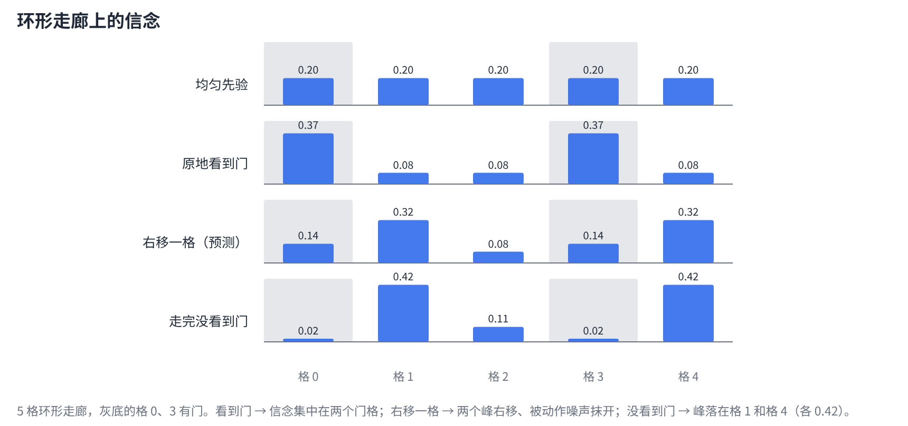
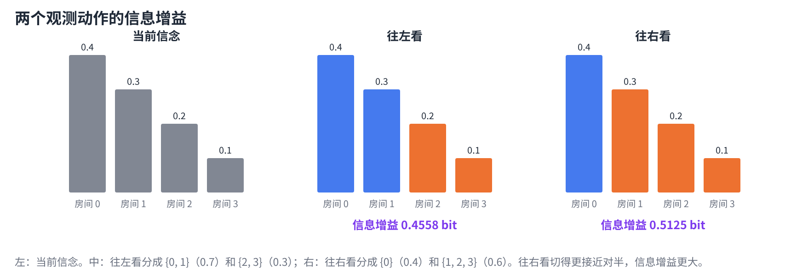
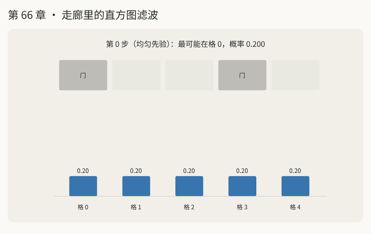

第 66 章 · VLN 的序列决策：POMDP 与信念状态、行为克隆的 O(T²) 与 DAgger 的 O(T)、语言条件策略、探索的信息增益
本地运行
git clone https://github.com/wikieden/math-and-eval-stats
cd math-and-eval-stats/code/notebooks
pip install jupyterlab torch numpy
jupyter lab ch66_vln_decision.ipynb也可以下载后直接用 VS Code 打开 .ipynb 运行。需要 GPU 的章节在 Colab 里选「代码执行程序 → 更改运行时类型 → GPU」。
本章回答：机器人不知道自己在哪个房间，它的“状态”是什么？看到一个冰箱、走一步再看一眼，信念怎么变？为什么行为克隆每步只错 0.1%，走 1000 步却可能一路错下去？DAgger 改了什么，误差界从 T² 变成了 T？同一张图，指令说“左转”和“右转”，网络怎么给出不同的输出？“往左看”和“往右看”哪个更值得做，怎么用信息量比较？
讲解日期：2026-11-25 · 上一章：第 65 章 VLN 的几何与评测 · 下一章：（全书完）
对应原文：DAggermath-and-eval-stats/materials/text/papers/dagger-1011.0686.txt（行为克隆的 T²ε 上界与 Θ(T²) 的例子，L46、L127–L159；DAgger 算法，L249–L257；定理 3.2 的 uTε_N 上界，L236–L239）；VLMapsvlmaps-2210.05714.txt（第 65 章）
本章缩写：POMDP = Partially Observable MDP（部分可观测的 MDP；MDP = Markov Decision Process，马尔可夫决策过程）；BC = Behavior Cloning（行为克隆）；DAgger = Dataset Aggregation（数据集聚合）；FiLM = Feature-wise Linear Modulation（逐特征 / 线性 / 调制）；IG = Information Gain（信息增益）；ε = 每步的犯错率；T = 回合长度（步数）；u = 犯一次错之后额外多付的代价；RT-1 = Robotics Transformer 1（机器人 Transformer 第 1 版）。全部缩写见 附录 · 缩写与术语表
讲解
第一步：POMDP：状态看不见，就用信念当状态（2026-11-25）
类比：半夜在陌生的房子里摸黑走。你不知道自己在哪，但心里有个“大概在厨房、也可能在卧室”的估计；摸到冰箱，这个估计就偏向厨房。这个“心里的估计”就是信念。
第 23 章的 MDP 假设智能体看得见状态 s。VLN 里看不见：只有当前视角的图像 o。POMDP 多了观测模型 \(P(o\mid s)\)，智能体维护信念 \(b(s) = P(s\mid \text{历史})\)，每一步两件事：
这就是第 20 章贝叶斯滤波的离散版（Kalman 是它的线性高斯版）。信念本身是一个“看得见”的状态，所以 POMDP = 在信念空间上的 MDP；最优策略是信念的函数，而不是当前图像的函数。这也是 VLN 模型都要带记忆（循环网络、历史 token、地图）的原因。
例子（两个房间，先验各 0.5；厨房里看到冰箱的概率 0.8，卧室里 0.1）：
| 观测 | 厨房 | 卧室 |
|---|---|---|
| 先验 | 0.5 | 0.5 |
| 看到冰箱一次 | 0.8889 | 0.1111 |
| 再看到一次 | 0.9846 | 0.0154 |
一句话：看不见状态时，用信念（状态的后验分布）当状态，每步先按动作预测、再按观测更新；POMDP 就是信念空间上的 MDP。
第二步：直方图滤波：走廊里先走一步再看一眼（2026-11-25）
例子（环形走廊 5 格，门在格 0 和格 3；看到门的概率：门格 0.9、非门格 0.2；往右走一格成功 0.8、原地不动 0.2）：
| 阶段 | 格 0 | 格 1 | 格 2 | 格 3 | 格 4 |
|---|---|---|---|---|---|
| 均匀先验 | 0.2 | 0.2 | 0.2 | 0.2 | 0.2 |
| 原地看到门 | 0.375 | 0.0833 | 0.0833 | 0.375 | 0.0833 |
| 往右走一格（预测） | 0.1417 | 0.3167 | 0.0833 | 0.1417 | 0.3167 |
| 走完没看到门 | 0.0235 | 0.4211 | 0.1108 | 0.0235 | 0.4211 |
看到门之后信念集中在两个门格（分不清是哪一个）；往右走一格，两个峰跟着右移、同时被动作噪声抹开一点；没看到门，进一步排除门格。最后格 1 和格 4 各 0.42：走廊有对称性，单靠门还分不开，要等更多观测（或者一条“左手边有窗户”的指令）。

图 66-1 · 四个阶段的信念柱状图（从上到下）。灰色格子是门。看到门 → 两个峰；右移一格 → 峰右移并变矮；没看到门 → 峰落在格 1 和格 4一句话：直方图滤波 = 预测（按动作移动并抹开）+ 更新（按观测加权再归一化）；对称的环境会留下多个峰。
第三步：行为克隆为什么误差累积成 T²，DAgger 为什么是 T（2026-11-25）
类比：学车只看教练开的录像。录像里车永远在车道中间，你从没见过“已经偏到路边”该怎么办；一旦自己开偏一点，就进入了没见过的状态，越错越偏。
行为克隆：在专家的状态分布 \(d_{\pi^*}\) 上做监督学习，每步和专家不一致的概率是 ε。问题是测试时状态来自自己的分布 \(d_\pi\)（这叫分布偏移）。DAgger 论文（L127–L159）证明：
直观：第 t 步第一次犯错的概率约 ε，犯错之后进入没见过的状态，剩下的 T − t 步可能都错；对 t 求和就是 εT²/2 的量级。原文还给了一个确实达到 Θ(T²) 的例子（L152–L157），所以这个界在最坏情况下是紧的。
DAgger（L249–L257）：让当前策略自己去跑，在它访问到的状态上请专家标注正确动作，加进数据集，重新训练，反复迭代。这样训练分布就逐渐变成了测试分布，定理 3.2（L236–L239）给出
u 是犯一次错之后多付的代价（能很快纠正回来的任务里 u 是常数）。
代入公式（ε = 0.001，u = 1；上界不超过 T 本身）：
| T | BC 上界 T²ε | DAgger 的主项 uTε | 一步都不错的概率 (1 − ε)^T |
|---|---|---|---|
| 10 | 0.1 | 0.01 | 0.9900 |
| 100 | 10 | 0.1 | 0.9048 |
| 1000 | 1000（= T，封顶） | 1 | 0.3677 |
VLN 的回合有几十到几百步，正好落在 T² 开始压倒一切的区间。实际训练里，DAgger 式的数据收集（在线让模型跑、用最短路规划器当专家标注）在 R2R 和 VLN-CE 上都是标准做法；NaVid、Uni-NaVid 等视频 VLN 模型也用类似的“在自己的轨迹上补标”来缓解分布偏移。BC 的基础见《VLA》第 2 章 行为克隆。
一句话：BC 只在专家的状态上学，测试时一错就进入没见过的状态，误差上界 T²ε；DAgger 在自己访问的状态上请专家标注，上界降到 uTε。
第四步：语言条件策略：同一张图，不同指令，不同输出（2026-11-25）
策略 \(\pi(a\mid o, \ell)\) 多了一个指令 ℓ。最常见的三种把语言接进来的方式：
- 拼接：语言嵌入和视觉特征拼起来（早融合，第 61 章）；
- 交叉注意力：语言 token 当 Query 读视觉特征，或者反过来（第 61 章第三步）；
- FiLM：语言生成每个通道的缩放和偏移，调制视觉特征：
例子（视觉特征 h = [1.0, 0.5, −0.5]；γ = W_γ ℓ、β = W_β ℓ）：
| 指令 | γ | β | 输出 |
|---|---|---|---|
| “左转” ℓ = [1, 0] | [1, 0, 0.5] | [0, 0.5, 0] | [1.0, 0.5, −0.25] |
| “右转” ℓ = [0, 1] | [0, 1, 0.5] | [0.5, 0, 0] | [0.5, 0.5, −0.25] |
同一个视觉特征，第一维在“左转”时保留、在“右转”时被关掉再换成偏置：语言决定了“看图的哪部分”。FiLM 的计算量只有逐元素乘加，RT-1 等机器人模型用它把指令接进卷积主干。
一句话：语言条件策略把指令接进视觉通路；FiLM 用语言生成逐通道的 γ、β，决定视觉特征的哪些部分被放大或关掉。
第五步：探索的信息增益：哪个观测最能减少不确定（2026-11-25）
在 POMDP 里，有些动作的价值不在于离目标更近，而在于看清楚。用熵（第 10 章）衡量信念的不确定，一个观测动作的期望信息增益是
也就是状态和观测之间的互信息。前沿探索（第 65 章）里“预计能看到多少新格子”就是它的近似。
例子（目标在 4 个房间里的信念 [0.4, 0.3, 0.2, 0.1]，熵 1.8464 bit；两个观测动作，每个都给出“是 / 否”两种结果，正确率 0.9）：
| 动作 | 能分辨什么 | 信息增益 |
|---|---|---|
| 往左看 | {房间 0, 1} 还是 {房间 2, 3}（0.7 vs 0.3） | 0.4558 bit |
| 往右看 | 是不是房间 0（0.4 vs 0.6） | 0.5125 bit |
看起来“往左看”一次排除两个房间更有用，但信念里 {0, 1} 已经占了 0.7，答案基本能猜到；“往右看”把信念切成 0.4 / 0.6，更接近对半分，结果更难预测，所以期望得到的信息更多。二元观测的信息增益最多 1 bit，切得越接近 50 / 50 越接近这个上限。

图 66-2 · 左：当前信念；中、右：两个观测动作各自把信念分成哪两组（颜色）和每种结果出现的概率。往右看切得更均匀，信息增益 0.51 bit > 0.46 bit一句话：信息增益 = 观测前后熵的期望减少量 = 状态和观测的互信息；把信念切得越接近对半，一次观测得到的信息越多。
动画演示：走廊里的直方图滤波

可交互版：animations/66-vln-decision.html（按钮：往右走一格、观测一次；勾选框切换“真实位置”的显示）。
怎么看：
- 上面是环形走廊，灰色格子有门，绿色圆点是机器人的真实位置（默认隐藏，机器人自己也看不到）；
- 下面是信念柱状图（第一、二步）：每次“走一格”，柱子右移并被抹开；每次“观测”，门格和非门格按看到 / 没看到重新加权；
- 多走几步、多看几次，信念从两个峰收敛到一个峰；对照真实位置看它是不是收敛对了。
练习与作答记录
题 1（第一步）：先验 [0.3, 0.7]，观测的似然 [0.6, 0.2]，后验是多少？
作答：（待作答）
题 2（第三步）：ε = 0.01、T = 50，BC 的上界 T²ε 和 DAgger 的主项 Tε（u = 1）各是多少？比值和 T 是什么关系？
作答：（待作答）
题 3（第五步）：信念是 4 个房间均匀分布，有一个完全不出错、能直接告诉你是哪个房间的观测，它的信息增益是多少 bit？
作答：（待作答）
口诀
看不见状态，信念当状态；先按动作推、再按观测乘；
走廊对称，峰会成双；
BC 只学专家走过的路，一错就跑偏，T 方乘 ε；
DAgger 让自己跑、专家来标，降成 T 乘 ε；
语言调制视觉，FiLM 给 γ、β；
信息增益是互信息，切得越对半看得越值。
本章复习卡片
ST213（POMDP、信念状态与离散贝叶斯滤波）、ST214（BC 的 T²ε 与 DAgger 的 uTε）、ST215（FiLM 语言条件；信息增益 = 互信息）。练习做完后，按答错、卡住的地方补上。
附录 · 延伸阅读
留给以后深入学习用，不影响本章主线。★ 是建议先读的。
推荐阅读
| 读什么 | 读哪里 | 读它为了什么 |
|---|---|---|
| ★ DAgger（Ross 2011） | §2–§3（L127–L257） | T² 与 T 的误差界和算法 |
| ★ 《VLA》第 2 章 行为克隆 | 全部 | BC 的基础与分布偏移 |
| 第 20 章 状态估计 | 贝叶斯滤波 | 信念更新的一般形式 |
| 第 23 章 MDP 与 Bellman | 全部 | POMDP 的前身 |
| 第 10 章 信息论与 KL | 熵与互信息 | 信息增益 |
| Thrun《Probabilistic Robotics》 | 直方图滤波、POMDP 章节 | 机器人里的信念规划 |
| FiLM（Perez 2018） | §3 | 逐特征线性调制 |
数学原理
- 信念是充分统计量：b_t 包含了历史里所有和未来有关的信息，所以 POMDP 的最优策略可以只依赖 b_t。
- BC 的 T² 推导：第一次犯错在第 t 步的概率 ≤ ε，之后至多 T − t 步都付代价；Σ_t ε(T − t) ≈ εT²/2。
- No-regret 学习：DAgger 的证明依赖在线学习的无悔性质，迭代 N 次后平均策略的损失趋于在自身分布上的最优。
- 信息增益：IG = H(S) − H(S | O) = I(S; O) ≥ 0；二元观测时 ≤ 1 bit。
公式清单
| 公式 | 意思 |
|---|---|
| \(b'(s') \propto P(o\mid s')\sum_s P(s'\mid s,a)b(s)\) | 信念更新 |
| \(J(\pi_{BC}) \le J(\pi^*) + T^2\varepsilon\) | 行为克隆的误差界 |
| \(J(\hat\pi) \le J(\pi^*) + uT\varepsilon_N + O(1)\) | DAgger 的误差界 |
| \(\gamma(\ell)\odot h + \beta(\ell)\) | FiLM |
| \(\text{IG} = H(b) - \mathbb E_o H(b\mid o)\) | 信息增益 |
代码对照：把本章的数字用代码算一遍
代码在仓库本地
math-and-eval-stats/solutions/chapter-code/ch66_vln_decision.py，配套测试tests/test_ch66.py：
bash cd math-and-eval-stats/solutions/chapter-code uv run python ch66_vln_decision.py uv run pytest tests/test_ch66.py
讲义 ↔ 代码：
| 讲义 | 公式 | 写法 | 跑出来 |
|---|---|---|---|
| 第一步 信念更新 | 贝叶斯 | bayes(prior, lik) |
0.8889、0.9846 |
| 第二步 直方图滤波 | 预测 + 更新 | corridor_step() |
格 1、4 各 0.4211 |
| 第三步 误差界 | T²ε、uTε | bc_bound、dagger_bound |
10 vs 0.1（T = 100） |
| 第四步 FiLM | γ ⊙ h + β | film() |
两种指令两种输出 |
| 第五步 信息增益 | 熵的减少 | info_gain() |
0.4558 vs 0.5125 bit |
关键几行：
pred = p_ok * np.roll(b, move) + (1 - p_ok) * b # 预测：按动作移动并抹开
b = np.asarray(prior, float) * np.asarray(lik, float); return b / b.sum() # 更新：乘似然再归一化
out -= po * entropy(bayes(prior, lik)) # 信息增益：减去观测后的期望熵
代码里才看得到的 3 件事：
- np.roll 假设走廊是环形的：真实走廊有尽头，走到头的概率质量要留在原地，不能绕回另一头。
- 观测不到也是观测：“没看到门”同样要乘似然（1 − 0.9 或 1 − 0.2），只在看到东西时更新会让信念越来越偏。
- 误差界只是代入公式：模拟行为克隆的误差累积 vs DAgger、画出误差累积图，留给里程碑 ME-M36。
自己改一改（不影响练习答案）：
- 把
corridor_step的门改到格 0 和格 2（不再对称），走一步、看一次之后信念还有两个峰吗？ - 把
LOOK_LEFT的正确率从 0.9 改成 0.99，它的信息增益能超过往右看吗？